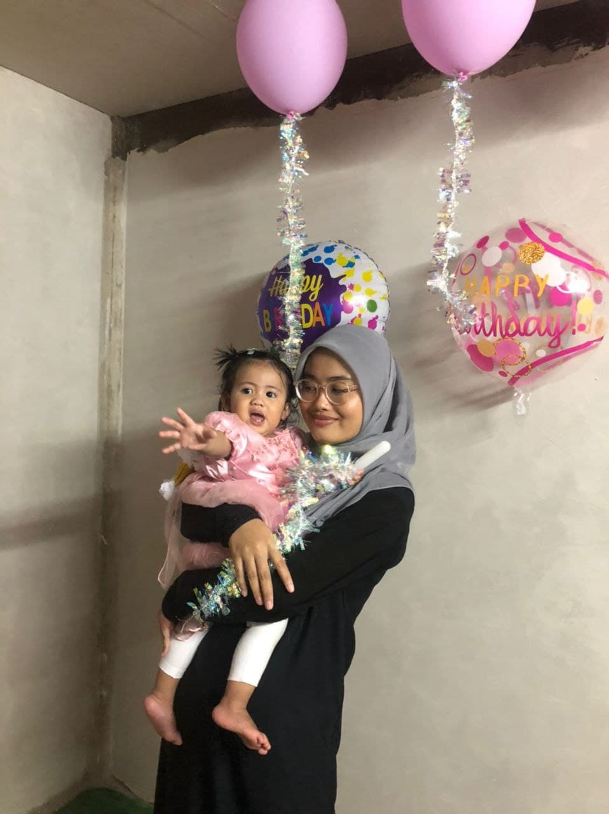

My Happy Family


The pictures above shows the warmth between my family and I. I really love my family because they often give me words of encouragement when I'm down. They also helped me when I needed help. I have 3 siblings, and I am the last child of three siblings. Besides, my elder brother were married and had 1 children. Meanwhile, my second brother also married and had 2 children. The last one is me which is still single and study at UiTM Machang Kelantan taking my diploma in Information Management.
My Best Friends
This is my best friends since secondary school. I love them so much. They has been there for me when I need someone to listens to my story and give opinion when i needed. Sometimes we fight but we always work it out. They are the best thing that has ever happened to me and thanks to them for being my bff.